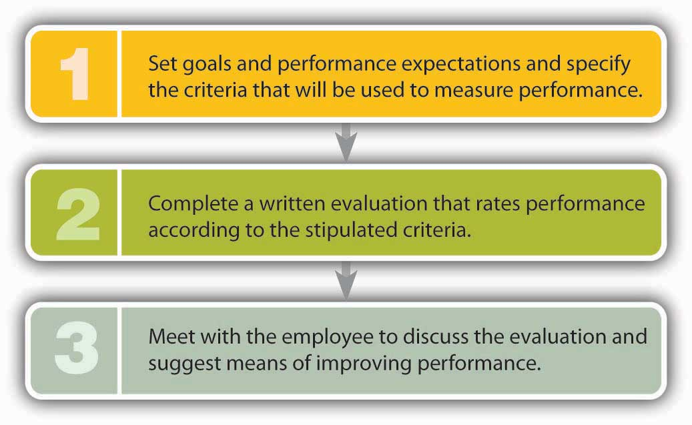

Employees generally want their managers to tell them three things: what they should be doing, how well they’re doing it, and how they can improve their performance. Good managers address these issues on an ongoing basis. On a semiannual or annual basis, they also conduct formal performance appraisalsFormal process in which a manager evaluates an employee’s work performance. to discuss and evaluate employees’ work performance.
Appraisal systems vary both by organization and by the level of the employee being evaluated, but as you can see in Figure 7.8 "How to Do a Performance Appraisal", it’s generally a three-step process:
Figure 7.8 How to Do a Performance Appraisal
It sounds fairly simple, but why do so many managers report that, except for firing people, giving performance appraisals is their least favorite task?Susan Heathfield, “Performance Appraisals Don’t Work,” About, http://humanresources.about.com/cs/perfmeasurement/l/aa061100a.htm (accessed October 11, 2011). To get some perspective on this question, we’ll look at performance appraisals from both sides, explaining the benefits and identifying potential problems with some of the most common practices.
Among other benefits, formal appraisals provide the following:
As for disadvantages, most stem from the fact that appraisals are often used to determine salaries for the upcoming year. Consequently, meetings to discuss performance tend to take on an entirely different dimension: the manager appears judgmental (rather than supportive), and the employee gets defensive. It’s the adversarial atmosphere that makes many managers not only uncomfortable with the task but also unlikely to give honest feedback. (They tend to give higher marks in order to avoid delving into critical evaluations.) HR professionals disagree about whether performance appraisals should be linked to pay increases. Some experts argue that the connection eliminates the manager’s opportunity to use the appraisal to improve an employee’s performance. Others maintain that it increases employee satisfaction with the process and distributes raises on the basis of effort and results.Archer North & Associates, “Reward Issues,” Performance Appraisal, http://www.performance-appraisal.com/rewards.htm (accessed October 11, 2011).
Instead of being evaluated by one person, how would you like to be evaluated by several people—not only those above you in the organization but those below and beside you? The approach is called 360-degree feedback, and the purpose is to ensure that employees (mostly managers) get feedback from all directions—from supervisors, reporting subordinates, coworkers, and even customers. If it’s conducted correctly, this technique furnishes managers with a range of insights into their performance in a number of roles.
Some experts, however, regard the 360-degree approach as too cumbersome. An alternative technique, called upward feedback, requires only the manager’s subordinates to provide feedback. Computer maker Dell uses this approach as part of its manager-development plan. Every six months, forty thousand Dell employees complete a survey in which they rate their supervisors on a number of dimensions, such as practicing ethical business principles and providing support in balancing work and personal life. Like most companies using this technique, Dell uses survey results for development purposes only, not as direct input into decisions on pay increases or promotions.“Culture of Winning/Tell Dell,” Dell, Inc., http://i.dell.com/sites/content/corporate/corp-comm/en/Documents/dell-fy11-cr-report.pdf (accessed October 11, 2011).
When a valued employee quits, the loss to the employer can be serious. Not only will the firm incur substantial costs to recruit and train a replacement, but it also may suffer temporary declines in productivity and lower morale among remaining employees who have to take on heavier workloads. Given the negative impact of turnoverPermanent separation of an employee from a company.—the permanent separation of an employee from a company—most organizations do whatever they can to retain qualified employees. Compensation plays a key role in this effort: companies that don’t offer competitive compensation packages (including benefits) tend to lose employees. But other factors come into play, some of which we discussed earlier, such as training and development, as well as helping employees achieve a satisfying work/nonwork balance. In the following sections, we’ll look at a few other strategies for reducing turnover and increasing productivity.Gregory P. Smith, “How to Attract, Keep and Motivate Your Workforce,” Business Know-How, http://www.businessknowhow.com/manage/attractworkforce.htm (accessed October 10, 2011).
Employees who are happy at work are more productive, provide better customer service, and are more likely to stay with the company. A study conducted by Sears, for instance, found a positive relationship between customer satisfaction and employee attitudes on ten different issues: a 5 percent improvement in employee attitudes results in a 1.3 percent increase in customer satisfaction and a 0.5 percent increase in revenue.“Companies Are Finding It Really Pays to Be Nice to Employees,” Wall Street Journal, July 22, 1998, B1, http://www.octanner.com/news/July1998.html (accessed May 6, 2006).
What sort of things improve employee attitudes? The twelve thousand employees of software maker SAS Institute fall into the category of “happy workers.” They choose the furniture and equipment in their own (private) offices; eat subsidized meals at one of three on-site restaurants; enjoy free soft drinks, fresh fruit on Mondays, M&M’s on Wednesdays, and a healthy breakfast snack on Fridays in convenient break rooms; and swim and work out at a seventy-seven-thousand-square-foot fitness center. They set their own work hours, and they’re encouraged to stay home with sick children. They also have job security: no one’s ever been laid off because of an economic downturn. The employee-friendly work environment helps SAS employees focus on their jobs and contribute to the attainment of company goals.Morley Safer, CBS 60 Minutes, interview with Jim Goodnight, president and founder of SAS Institute, April 20, 2003, http://www.cbsnews.com/stories/2003/04/18/60minutes/main550102.shtml (accessed October 9, 2011); “2011—100 Best Companies to Work For,” Fortune, http://money.cnn.com/magazines/fortune/bestcompanies/2011/snapshots/1.html (accessed October 11, 2011). For a description of the company’s work/life initiatives, visit its Web site at http://www.sas.com/corporate/worklife/index.html (accessed October 11, 2011). Not surprisingly, it also results in very low 3 percent turnover.
Thanking people for work done well is a powerful motivator. People who feel appreciated are more likely to stay with a company than those who don’t.Robert McGarvey, “A Tidal Wave of Turnover,” American Way, December 15, 2004, 32–36. While personal thank-yous are always helpful, many companies also have formal programs for identifying and rewarding good performers. The Container Store, a national storage and container retailer, rewards employee accomplishments in a variety of ways. Recently, for example, twelve employees chosen by coworkers were rewarded with a Colorado vacation with the company’s owners, and the seven winners of a sales contest got a trip to visit an important supplier—in Sweden.The Container Store, “Careers,” http://www.containerstore.com/careers/index.jhtml;jsessionid=0C2Q2LP3RTG0XQFIAIMCM44AVABBMJVC (accessed October 11, 2011). The company is known for its supportive environment and has frequently been selected as one of the top U.S. companies to work for.
Companies have found that involving employees in decisions saves money, makes workers feel better about their jobs, and reduces turnover. Some have found that it pays to take their advice. When General Motors asked workers for ideas on improving manufacturing operations, management was deluged with more than forty-four thousand suggestions during one quarter. Implementing a few of them cut production time on certain vehicles by 15 percent and resulted in sizable savings.Freda Turner, “An Effective Employee Suggestion Program Has a Multiplier Effect,” WebPro News, March 4, 2003, http://www.webpronews.com/an-effective-employee-suggestion-program-has-a-multiplier-effect-2003-03 (accessed October 11, 2011).
Similarly, in 2001, Edward Jones, a personal investment company, faced a difficult situation during the stock-market downturn. Costs had to be cut, and laying off employees was one option. Instead, however, the company turned to its workforce for solutions. As a group, employees identified cost savings of more than $38 million. At the same time, the company convinced experienced employees to stay with it by assuring them that they’d have a role in managing it.Richard L. Daft and Dorothy Marcic, Understanding Management (Florence, KY: Cengage Learning, 2006), 219, http://books.google.com/books?id=xWxmFNMKXhEC&dq=isbn:9781439042328 (accessed October 11, 2011).
As important as such initiatives can be, one bad boss can spoil everything. The way a person is treated by his or her boss may be the primary factor in determining whether an employee stays or goes. People who have quit their jobs cite the following behavior by superiors:
Holding managers accountable for excessive turnover can help alleviate the “bad-boss” problem, at least in the long run. In any case, whenever an employee quits, it’s a good idea for someone—someone other than the individual’s immediate supervisor—to conduct an exit interview to find out why. Knowing why people are quitting gives an organization the opportunity to correct problems that are causing high turnover rates.
Before we leave this section, we should say a word or two about termination—getting fired. Though turnover—voluntary separations—can create problems for employers, they’re not nearly as devastating as the effects of involuntary termination on employees. Losing your job is what psychologists call a “significant life change,” and it’s high on the list of “stressful life events” regardless of the circumstances. Sometimes, employers lay off workers because revenues are down and they must resort to downsizingPractice of eliminating jobs to cut costs.—to cutting costs by eliminating jobs. Sometimes a particular job is being phased out, and sometimes an employee has simply failed to meet performance requirements.
Is it possible for you to get fired even if you’re doing a good job and there’s no economic justification for your being laid off? In some cases, yes—especially if you’re not working under a contract. Without a formal contract, you’re considered to be employed at will, which means that both you and your employer have the right to terminate the employment relationship at any time. You can quit whenever you want (which is good for you), but your employer can fire you whenever it wants (which is obviously bad for you).
Fortunately for you, over the past several decades, the courts have undercut employers’ rights under the employment-at-willLegal doctrine that allows an employer to fire an employee at will. doctrine.Charles J. Muhl, “The Employment-at-Will Doctrine: Three Major Exceptions,” Monthly Labor Review, January 2001, 1–11, http://www.bls.gov/opub/mlr/2001/01/art1full.pdf (accessed October 11, 2011). By and large, management can no longer fire employees at will: usually, employers must show just cause for termination, and in some cases, they must furnish written documentation to substantiate the reasons for terminating an employee. If it’s a case of poor performance, the employee is generally warned in advance that his or her current level of performance could result in termination. As a rule, managers give employees who have been warned a reasonable opportunity to improve performance. When termination is unavoidable, it should be handled in a private conversation, with the manager explaining precisely why the action is being taken.
Managers conduct performance appraisals to evaluate work performance, usually following a three-step process:
In addition to offering competitive compensation, companies may take a variety of steps to retain qualified employees:
On the other hand, employers may have to terminate the employment of (that is, fire) some workers.